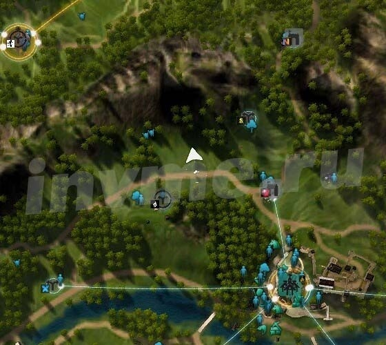
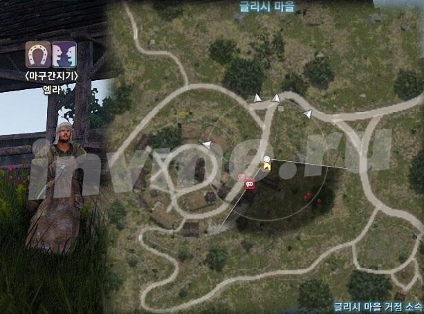
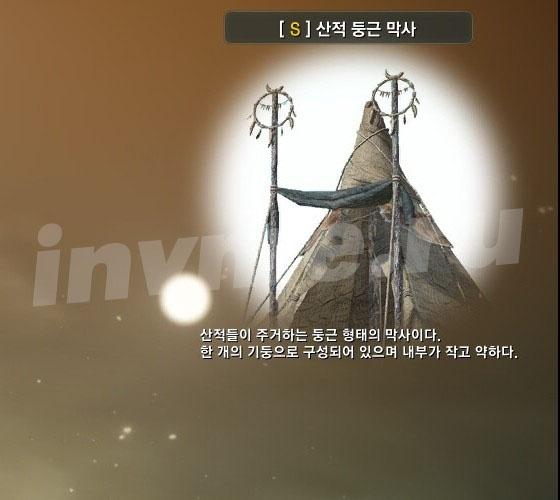

Todo o conhecimento no Deserto Negro. Ecologia Serendii
 Nesta parte do guia para todo o conhecimento no Deserto Preto discutirá habitantes subseção Serendii. Ao contrário da seção anterior, em muitos rarnyh Serendii e elite mobs, que fornecem para o assassinato de conhecimento. E esse conhecimento não é sempre disponível em qualquer outra forma. Como antes, vou tentar especificar o local exato de rara desova mobs no mapa.
Nesta parte do guia para todo o conhecimento no Deserto Preto discutirá habitantes subseção Serendii. Ao contrário da seção anterior, em muitos rarnyh Serendii e elite mobs, que fornecem para o assassinato de conhecimento. E esse conhecimento não é sempre disponível em qualquer outra forma. Como antes, vou tentar especificar o local exato de rara desova mobs no mapa.
Outros artigos da série:
A energia e conhecimento em Desert Preto (Guia de Introdução)

pessoas
- Moradores de Balenosa oriental
- moradores Serendii
- noivos urbanas
- Rangers marinas
- Moradores da Western Balenosa
- moradores Kalfeona
- moradores Keplana
- Moradores do sudoeste Kalfeona
- Moradores da mídia
- concessionários misteriosas
- nós de controle (do interior)
- nós de controle (North Ocean)

terreno

oceano

ecologia
- Ecologia leste Balenosa
- Serendii Ecologia (Você está aqui)
- Ecologia Kalfeona
- dos meios ambientais
- Peixes

Adventures
- Eastern Balenosa Jornal
Adventures in Velii
aventuras no antigo salão de
Aventura Elias Ilha
Adventures in Balenose I
- Jornal Serendii
Adventures in Serendii II
Adventures in Serendii III
Adventures in Serendii IV
Adventures in Serendii V
Adventures in Serendii I
- Jornal Kalfeona
aventuras no norte Kalfeona
Adventures in Keplan
Adventures no sudoeste Kalfeona
Adventures in Kalfeone I
Adventures in Kalfeone (coleta)
Kalfeon e Valquírias
Stories of Darkness
- da revista Meios Adventures na mídia I Adventure in the Media II Adventures na mídia III Acção na mídia IV Adventures na mídia V

ciência
- história I
- Histórico II
- Economia I
- política I
- cultura I
- teologia I
- Alchemy I
- I Clãs
- política II
- economia II
- cultura II
- cultura III
- teologia II
- Alchemy II
- mundo
Ecologia Serendii
Fauna Serendii (3 energia)
|  | cervos marrons grandes, são encontrados na floresta ao longo das montanhas na parte Serendii sul. 1-3 pedaços. | |
lobo Serendiyky |  | lobos cinzentos são encontrados na floresta ao longo das montanhas na parte Serendii sul. Fácil de encontrar, no sul-oeste do mosteiro de sectários, ao sul Anarin . 1-3 pedaços. |  |
urso Serendiysky |  | Grandes ursos pretos. Relativamente raros nas montanhas na parte Serendii sul. Você pode encontrar o sul-leste do Sangue do mosteiro ou nas montanhas ao sul da terra vermelha de orcs. 1-2 pedaços. |  |
lagarto Horned |
| Rarnaya cravado lagarto com muito tempo de desova. Talvez o fim do dia. Na tradução para o russo, por alguma razão desconhecida, o nome do próprio lagarto - gila-dragão. Pessoalmente, eu tive que gastar em sua busca não é um dia, e conseguiu matar apenas quando havia outros jogadores na vizinhança. Parece o nordeste da ponte quebrada perto da torre em ruínas. |
|
flamingo Nest |  | As árvores com ninhos flamingos. Eles estão localizados no sul pântano de Hidelya. 3-10 partes. |  |
|  | Caranguejos como arbusto, vivem em torno dos pântanos sul de Hidelya. 5-25 partes. | |
|  | Caranguejos disfarçados monte de terra com grama no topo, são encontrados a oeste do posto avançado do portão Noroeste. 5-15 partes. |  |
Amarelo-jack |  | Os ninhos cucos. Você pode encontrar no chão na grama para o norte-oeste de Hidelya. 15-25 peças. |  |
|  | carneiros brancos macios nas montanhas a noroeste de Hidelya. Matar terá apenas um. |  |
lagarto Beryl |  | Grande lagarto verde. Você pode encontrar o sub- Farm Costa . 1-5 peças |  |
| Cordeiro branco pequeno. Ela pode ser encontrada entre os rebanhos de ovelhas nas montanhas a noroeste de Hidelya. Mate todos têm um. | ||
|  | cabras da montanha nas montanhas a noroeste de Hidelya entre rebanhos de ovelhas. Mais uma vez, você precisa matar o único. |  |
salamandra Awful |  | Salamander . lagarto aquático pequeno. Ele pode ser encontrado no rio no acampamento dos orcs vermelho ou no rio oeste da terra vermelha de orcs. 3-10 partes. |  |
Serendiyskaya cabra de montanha |  | cabra cinza de montanha. Eles são encontrados em Balenose nas montanhas a oeste do desfiladeiro e conectando Balenos Serendiyu. Kill só precisa de um. |  |
lagarto pequeno |  | Pequenos lagartos fugir. Ele pode ser encontrado em torno dos pântanos na parte Serendii sul, pessoalmente eu era fazenda confortável próximo ao Portão East Gate . 20-80 peças. |  |
Pink flamingos | Flamingos são encontradas em um pântano perto do posto avançado East Gate. Contadas como grandes e pequenos. Tudo que você precisa para matar 10-25 peças. |  | |
|  | Grande luz lagartos verdes são encontrados ao norte de Glishi. 1-4 pedaços. |  |
|  | Nas montanhas ao norte-oeste de Hidelya. 4-15 partes. |  |
kamnekrab Adulto |  | Caranguejos disfarçados como uma grande pedra com musgo. Convenientemente fazenda para o norte-leste de Glishi, perto da bifurcação na estrada. 1-15 partes. |  |


Flora Serendii (2 poder)
|  | Grande, como uma pilha de arbustos de terra. Eles são encontrados no pântano sul de Hidelya próximo ao Portão East Gate . 5-20 partes. |  |
monstro de lama |  | Monstros lama. Eles são encontrados em Ruínas Glishi . 1-20 partes. |  |
|  | Grandes poças de lama. Pode ser encontrado em ruínas Glishi . 3-10 partes. |  |
Preto spike-espinho |  | Arbustos de grande porte pantanoso. Eles são encontrados em um pântano perto dos centros de produção para o norte da Glishi. 5-15 partes. |  |
Red spike-espinho |  | arbustos bog pequenas, movendo-se em direção ao subterrâneo objetivo. Eles são encontrados em um pântano perto dos centros de produção para o norte da Glishi. 4-10 partes. | |
|  | Pequenos arbustos tiro pântano. Eles são encontrados no pântano com o Flamingo, sul de Hidelya. 5-15 partes. |  |
flycatcher venenosa |  | Plantas carnívoras como papa-moscas. Espalhados por todo o pedaço de pântanos na parte Serendii sul. Convenientemente norte fazenda de Glishi no pântano ao redor da ilha, que está localizado perto do centro de mineração . 5-15 partes. |  |
Keeper do campo |  | Mobs com grandes sacos de trigo para trás. Eles são encontrados nos campos de todo o Plantation Moretti . 2-7 pedaços. |  |
|  | bogey ao vivo com tranças. Eles são encontrados nos campos de todo o Plantation Moretti . 4-9 pedaços. | |
| abóbora Live. Eles são encontrados no Farm Alejandro . Ou se houver um trabalho a esses monstros, você pode obter o conhecimento da criança correndo na estrada na mesma fazenda para 0 energia, o que reduz significativamente o tempo de sua agricultura. |  | |
Venenoso espinho-espinho |  | arbustos média pântano. Eles são encontrados nas flamingo pântano, sul de Hidelya. 10-20 peças. |  |
Insects Serendii (2 poder)
|  | Mais de 201 pontos de amizade e 3 Energia do Amaranto , armas vendedora Glishi. |  |
|  | Hive nas árvores. Ele pode ser encontrado nas montanhas ao norte-oeste de Hidelya ou se houver muitos jogadores, a sudoeste da Farm Alejandro. 15-25 peças. |  |
abelha Brigandine |  | conchas pequenas. Eles são encontrados no rio de terras vermelhas de orcs, na parte Serendii ocidental. 5-10 partes. |  |
recluso aranha |  | Grandes aranhas florestais. Você pode encontrar o sul-oeste do posto portão sul-oeste . 2-5 pedaços. |  |
|  | Pequenas aranhas que vivem nas árvores ao longo da estrada para o oeste de detenção acampamento central . 5-15 partes. |  |
|  | Explosão de aranhas. Convenientemente fazenda em uma colina ao sul da Fazenda Costa . 10-50 peças. |  |
Lair aranhas venenosas |  | Nests explodindo aranhas. Localizado sobre uma colina ao sul da Fazenda Costa . 15-20 peças. |  |
parasitas Bag |  | Insects disfarçado como sacos. Fazenda para fazenda Alejandro . 10-20 peças. |  |
parasitas Barrel |  | Insects disfarçada tambores. Fazenda para fazenda Alejandro . 5-15 partes. |  |
|  | Enxame de vespas. São encontrados perto das montanhas ao norte-oeste de Hidelya, perto do amarelo de nariz. 20-50 peças. |  |
|  | Bugs como gorgulhos. Fazenda perto de cucos, noroeste da Hidelya. 3-10 partes. |  |
|  | Aranha . Mais de 251 pontos de amizade e 2 energia a partir de Ella , Stable Mestre Glishi. |  |
Bandits (2 poder)
Sween-bandit |  | Bandits-veado. Ele pode ser encontrado na parte nordeste do acampamento. 1-5 peças. |  |
guarnição Captain |  | Bandidos nas peles de lobos, que lutam com as mãos desprotegidas. Ele pode ser encontrado na parte noroeste do acampamento de ladrões. 3-10 partes. |  |
Capitão shooters |  | Bandidos com grandes clubes. 3-10 partes. |  |
gigante desonestos |  | gigantes bandidos suportar peles. 1-5 peças. | |
Vampira-arqueiro |  | Bandidos arqueiros. 5-15 partes. |  |
Rogue Warrior |  | Bandidos com duas espadas. 25-35 peças. |  |
|  | Armadilhas no acampamento de bandidos que produzem estacas fora do solo. Convenientemente Farm, na parte sul dos ladrões da floresta, floresta Scarlet entre a estrada eo rio, se não há ninguém lá. Ou, na parte nordeste do campo, longe dos outros jogadores. 4-7 pedaços. |  |
Um log com paus |
| Armadilhas de logs com espigas, amarrado a uma árvore. 1-5 peças. Há muito menos frequência do que outras armadilhas, além disso eles estão constantemente a quebrar cambaleando perto das árvores jogadores. Eu, pessoalmente, Farm, na parte sul do campo. O mapa à direita tentou dar exatamente 2 assentos desovar. |   |
Grade com pedras |  | Armadilhas com caindo sobre suas pedras principais. Convenientemente Farm perto da pedra grande na parte ocidental do acampamento, como normalmente não há um não ir e não tocá-los com a sua carcaça. 3-7 pedaços. |  |
lobo Tamed |  | Lobos bandidos. 10-20 peças. |  |
ladrões Hut |  | Casas bandidos. Convenientemente Farm na parte noroeste do acampamento, perto da montanha de tesouros. 10-15 peças |  |
ladrões Hut |  | Branca tendas bandidos. Convenientemente Farm na parte noroeste do acampamento, perto da montanha de tesouros. 10-15 peças. |  |
ladrões Talisman | Totems de bandidos. 1-5 peças. Espalhados por todo o acampamento. |  | |
ladrões Torre de Vigia |  | Torres de vigia bandidos. 10-20 peças. |  |
| A maioria dos ladrões watchtower |  | bandidos watchtower gigante. Localizado na parte noroeste do acampamento, perto da montanha de tesouros roubados. 1-5 peças |  |
| As células com os guardas dentro. São contadas como células dentro do rebelde Al Rundi castelo. 5-10 partes. |  | |
despojos peito |  | Treasure Chests bandidos. Eles estão localizados na parte norte do acampamento. 2-7 pedaços. |  |
Carro com despojos |  | Carros bandidos tesouro. Eles estão localizados na parte norte do campo de bandidos. Destruir precisa 1-5 pedaços. |  |

Demons Serendii (2 poder)
| As células com porcos. Convenientemente Farm na parte ocidental da terra de demônios, ao nordeste de um pequeno pântano. A primeira vez que teve que destruir 80 peças, o segundo personagem foi dada à primeira célula. |  | |
|  | Demons mineiros. Eles são encontrados na pedreira ao norte-oeste de Hidelya ou ao longo das montanhas ao norte da Hidelya. 20-35 peças. |  |
Os demônios-mineiros vagão | Carrinhos com pedras. Localizado no nordeste e leste de Hidelya. 25-45 peças. | ||
Torre demons-mineiros |  | Torres demônios de um monte de pedras. Você pode encontrar no norte, nordeste e leste de Hidelya. 30-50 peças. |  |
|  | Bandeiras demônios. São demônios no oeste terra do Hidelya. 10-30 peças. |  |
A prestação de demônios |  | Carrinhos de demônios com coisas roubadas. 1-10 partes. |  |
| demônios Estacionamento altar |  | Tendas demônios. 1-15 partes. |  |
|  | Pendurando em circuitos celulares com os guardas dentro. Localizado em uma torre-altar dilapidado, na parte norte da terra de demônios. 1-5 peças. |  |
|  | Rarny diabo que monta um lobo. Ele aparece em uma pequena demônios do pântano no oeste terra do Hidelya. Ou, para 851 pontos 8 amizade e energia a partir de Zara Lynch . |  |
Altar demon-lutador | demônios desarmados enormes. 5-20 partes. |  | |
cavaleiro demônio Altar |  | Demons montando em lobos. 5-20 partes. |  |
olheiro demon Altar |  | Demons arqueiros 15-25 peças. |  |
Guerreiro do demónio Altar |  | Possuído por clubes perfurantes, com longas penas na cabeça. 30-60 peças. |  |
|  | demônios comuns com espadas. 10-25 peças. |
foganov Clã (2 poder)


Clã nua (2 poder)
|  | Naga escondendo perto Hidelya. Em suma, eles respawn 3 lugares: perto do cais Hidelya, sob a ponte ao sul-oeste de Hidelya e sob a ponte para o sul-leste de Hidelya. O suficiente para matar apenas um. | |
|  | tendas Nag. Eles estão localizados ao nordeste da Glishi. 1-5 peças. |  |
|  | Totens nuas. Você pode encontrar a nordeste de Glishi. 2-7 pedaços. Ou 3 de alimentação da Hanna , instrumentos vendedora Glishi. |  |
Comandante vadear nua |  | Grande equitação nua sobre dinossauros. Eles são encontrados no nordeste da Glishi. 5-20 partes. |  |
|  | Grande guerra nua com machados e escudos. Eles são encontrados no norte pântano de Glishi. 5-30 partes. |  |
Marsh Naga lenhador | Small yellow nua com escudos. Eles são encontrados no pântano ao norte-oeste de Glishi. 1-15 partes. |  | |
Marsh Naga Spearman |  | Pequeno nua com lanças. Eles são encontrados no pântano ao norte-oeste de Glishi. 5-20 partes. |  |
|  | lagartos comuns com alabardas. Eles são encontrados no nordeste da Glishi. |  |
Tribe Sayzhek (2 poder)
|  | Pequenos vasos de orcs, localizados em altas pólos das varas. 1-7 pedaços. |  |
|  | Pequenas gaiolas de madeira. 1-5 peças. |  |
Sayzhek-tocha-portador | Orcs com a queima nas mãos do conselho. Fazenda perto de Hunter Orcs corpo , na parte ocidental do acampamento orc. 10-25 peças. |  | |
orcs altar vermelhas grandes |  | Orcs gigantes altar. Localizado na parede norte da torre arruinada. É necessário destruir a única. | |
sayzhekov Watchtower |  | orcs artilharia, parece uma cabana feita de tábuas com salientes das paredes das armas. 20-40 peças. |  |
|  | Casas orcs. É necessário destruir 20-40 peças. |  |
Sayzhek olheiro |  | orcs convencionais com um clube em suas mãos. 5-10 partes. |  |
| Grandes orcs com dois clubes. 10-20 peças. |  | |
|  | Grandes orcs que lutam com seus punhos. Convenientemente Farm perto da torre em ruínas. 10-15 peças. |  |
Brazier sayzhekov |  | orcs Grill com frigideira cogumelos. É necessário destruir as peças 5-10. |  |
caldeira de grandes orcs |  | Grandes caldeiras orcs. 3-7 pedaços. | |
Jovem |  | O jovem orc com os clubes. 15-30 peças. |  |
|  | O jovem orc sem armadura, atirando pedras. 30-70 peças. | |
|  | Grandes orcs com uma espada feita das garras de um animal. 15-25 peças. |  |
|  | xamãs Orc, pegando bolas de fogo. 15-20 peças. |  |
|  | Os orcs com escudos em suas mãos. 5-10 partes. |  |
|  | Na pousada Glishi, no assistente (um dos quatro personagens que estão em cada bar). Aparentemente, o conhecimento só é concedida após empregos violência sectária. Ou para matar mobs com o mesmo nome. |
Os insurgentes Al Rundi (2 poder)


Os sectários (2 poder)


Kzarka (2 poder)
|  | Nas ruínas do templo, que fica ao sul do campo de detenção de Southern . No altar no centro de um grande círculo em frente ao templo subterrâneo para 5 energia. |  |
Vítima templo Kzarki |  | Colunas acorrentado a ele com as vítimas de vestes brancas. Eles estão localizados nas catacumbas sob o Santuário Kzarka . 4-8 pedaços. 50 + níveis. |  |
templo Guerreiro Kzarki |  | templo Guerra Kzarka. 3-8 pedaços. 50 + níveis. |  |
templo Sacerdotisa Serendii |  | Sacerdotisa Santuário Kzarka com duas adagas em suas mãos. 15-20 peças. 50 + níveis. |  |
| régua venal Kzarka | Mais de 51 pontos de amizade em Hakone , localizados na mina para o oeste do Santuário Kzarka . Obrigado mdk89 para obter informações. |  | |
templo Priest Krazki |  | Sacerdotes com as equipes dos ossos. Eles estão localizados nas catacumbas sob o Santuário Kzarka . 40-90 partes peças. 50 + níveis. |  |
templo kzarki Magician |  | Sacerdotes com aduelas em madeira. Eles estão localizados nas catacumbas sob o Santuário Kzarka . 10-25 partes peças. 50 + níveis. |  |
A Ordem dos Cavaleiros de Sombras


{kind=link}
{kind=link}
{kind=link}
{kind=link}
{kind=link}
{kind=link}
{kind=link}
{kind=link}
{kind=link}
{kind=link}
{kind=link}
{kind=link}
{kind=link}
{kind=link}
{kind=link}
{kind=link}
{kind=link}
{kind=link}
{kind=link}
{kind=link}
{kind=link}
{kind=link}
{kind=link}
{kind=link}
{kind=link}
{kind=link}
{kind=link}
{kind=link}
{kind=link}
{kind=link}
{kind=link}
{kind=link}
{kind=link}
{kind=link}
{kind=link}
{kind=link}
Espero que as informações recolhidas ajudarão na busca de conhecimentos para as coleções completas. Como sempre eu vou ser feliz para quaisquer esclarecimentos, correções, adições e questões. Obrigado pela sua atenção e jogo agradável.
régua venal Kzarka. Inicia no mesmo lugar, único Sacerdote Ellian Hakon, para amizade 51 pontos.
e por os nomes:
2) Temple of Sacrifice Serendii
3) Guerreiro Temple Serendii
4) templo Sacerdotisa Serendii
6) templo Priest Serendii
7) M. templo Serendii
A verdade não é claro conhecimento Serendii escrita, e escrito mobs Kzarki.
Obrigado, agora tentar adicionar.
E sim, ele é chamado: "Bem-vindo à localização desenvolveu-mundo". Aqui está toda a cidade convertidos duas maneiras.
Grande amigo - obrigado para o trabalho feito! já em si com o coreano PTA sonhava com isso, e muitas vezes marcada aqui - fez rosca ninguém)))
Você é bem-vindo, bom que você veio a calhar. Outro estava terminando.
Muito obrigado pela sua dificuldade. De gila eles certamente torce ...
Você está sempre satisfeito quando os artigos são úteis.
Aliás, parece ser na versão que já estão corrigidos. Temos de verificar. Mas foi um gila teste beta, eu mesmo quando alguns screenshots foram deixados.
Um par de dias atrás eu estava procurando, corrigida :)
Eu não posso obter o conhecimento: amaranto Web, amizade 284. E assim, não só com esse conhecimento, é o tupit servidor ou algo que eu não entendo? Alguém pode explicar?
Dificilmente servidor. O conhecimento em si está na lista de prêmios para a amizade lá com ela? mostra RV esquina?
Sim monitores, óculos amizade mais do que precisa, mas o conhecimento da linha durante a conversa com ela lá.
Estranho, eu faço com esse conhecimento não deve haver qualquer problema. Você certamente pode tentar fazer as quests nele. Há um par de elaboração de que ela e ferreiro orc seguinte. E ainda há Missões aranhas no posto avançado ao sul-oeste de Glishi, mas eu tenho certeza que não malha.
lobo Serendiyky está no sudoeste do acampamento rebelde Al-Rundi
Eu queria aprender, gila-dragon - uma estrela no mini? ) E, em seguida, por uma hora run)))
Sim, mobs elite olhar como uma grande estrela. Se ele não está lá, não é melhor esperar, não pode aparecer um par de horas. Embora eu acho que de respawn acelerado, antes de me passou semanas procurando por ele, e agora muitas vezes se encontram. E ela já não gila-dragão, infelizmente. Ela foi privado de este apelido depois de PTA.
No que diz respeito comandante pântano Nag, no meu caso não era tão simples, algumas horas de trabalho duro e um total de 42 do pingente e então o conhecimento dos fatores, há muito aguardadas, mas não são agravantes, tudo isso nag para mim foi a última.
E muito obrigado para o guia, é um ótimo trabalho, simplifica muito a vida e economiza tempo, você herói!
Aqui estão todos os mobs aleatórios completas, como se viu. Na versão última Roux eu também estava comandantes nuas par de horas, correndo em quatro lugares desovar.
De nada. Espero voltar em breve para o ritmo e continuar.
Eu não consigo entender onde obter os mais recentes conhecimentos sobre sayzhekah. Onde está a pousada que, para folshebnik?
Na pousada Glishi tem 4 herói. Eles são quase em cada taberna no jogo. lontra anão gigante e um mágico. Que uma vez recebi este conhecimento a partir deles, como escreveu no artigo.
Mas você pode apenas bater o mobs de mesmo nome na liquidação dos orcs.
Aqui Horned Lizard
homem, você serёzdno ??? 2-10 mobs matar ????? Ontem passei a busca GOP em si e não estudar primeiro mob (alguns mineiros lá eu terrivelmente queimado .....) e você escrever 2-10 ????!
Sem sorte, o que posso dizer. 1 Eu só matou 400 guaxinins, até que eu tenha dado conhecimento. E outra vez foi um conhecimento raro de Ogre Ogre 7-10.
Correta seção siri Rare sendo kalfeona estão localizados perto da entrada da caverna varagonov em vez da tela especificado
invme.ru/908/vse-znaniya-v-black-desert-ekologiya-kalfeona#comment3789
régua venal Kzarka.
Os golfinhos NPC especificados na verdade nome Delpenio. Em 2 que não tinha conhecimento de Kzarke amizade. No Hakon conhecimento é de 51 pontos Amizade 2 Energia
Sim, de fato, eu cometi um erro com NPCs, como visto no mapa. Obrigado, corrigido. E sim, o nome do NPC mudou.
ladrões Hut para ganhar conhecimento teve de matar 24 peças.
Prisão para o conhecimento destruiu 22 peças.
Obrigado pela informação, mas recentemente eu joguei considerada mobs. Com o seu valor total do aleatório, às vezes até 200 peças pode ser diferente. Em New Hyde não vai mesmo tentar contá-los, e, em seguida, um segundo personagem para contar, coreanos lutou contra todos desejamos.
Morcegos, aqueles que não se encaixam na caverna com os gnomos?
Não, é que os morcegos habituais. O mais provável é contada em kalfeonskih mobs, mas vencê-los mais fáceis de kalfeonskih cavernas, há mais.
Morto em algum lugar 20-30 pedaços posto de A contados, mas eu não entender onde eles estão matriculados. Talvez eu olhei.
O Eco Kalfeona / Fauna Kalfeona.
Sim, eu estou na área das prisões tiveram que desmontar 50-70 ..
No " Clã Nag proficiência" " Nagas Invisível ", você pode adicionar mais um lugar do seu habitat, parece adicionados na última atualização. Sentado à esquerda debaixo da ponte, a partir da ponte Hidelya que leva da fazenda Hidelya Costa.
Sinto muito, erro tipográfico, bem debaixo da ponte.
É isso mesmo, não é ele, também. E, no entanto, ao que parece, formar a ponte do outro lado Hidelya. Foi originalmente 3 se não 4, coloque a desova. Mas uma vez que só precisa de um, eu só adicionei um mapa para a cidade mais próxima. Vou tentar acrescentar sobre locais alternativos, obrigado.